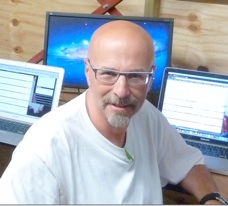

|  |
The Active 10 tracker we have developed for Public Health England has now over 530,000 downloads
Successful review for The Seta European project I coordinate. October 2017
Second consecutive year for MoveMore, the tracker app we have developed for Sheffield
We have launched Active 10 on behalf of Public Health England. This is an app and server infrastructure designed to collect sub-minute tracking data from hundreds of thousands of citizens. March 2016
Second industrial project with Football Whispers kicked off in February 2016.
Seta, the European project I coordinate on
Large scale data ecosystem for urban mobility kicked off in Sheffield in February 2016. 13 partners, €5.5M
Industrial project with Football Whispers kicked off in November 2015.
My Tool SeeingWithMyOwnEyes is in the news!
Second project with JustGiving kicked off on October 1st 2014.
The University of Sheffield has risen to 69th place in this year’s QS World University Rankings (16 September 2014)
We have a an open position for a senior lecturer/ lecturer (assistant/associate professor) in Biomedical Sensing and Biomedical Information Management. The ideal applicant is a person with experience in biomedical information management (BIM), primarily in association with ubiquitous computing/wearable sensing technologies (and associated BIM issues such as data integration and contextualisation, data analytics and visualisation), and/or medical decision-making. Interest and willingness to make an impact in the real world is also a requirement. Semantic technologies are clearly in focus here. This position is part of a very large investment our university is making into the Insigneo Institute for in Silico Medicine. Insigneo has over a hundred researchers working on the Virtual Physiological Human (VPH), an ambitious goal that has the potential of a transformational impact on healthcare. The position will be shared between our group (the Organisation, Information and Knowledge Group at the Department of Computer Science) and Insigneo.
I am Invited Keynote Speaker at CLEF 2014 – Conference and Labs of the Evaluation Forum
Information Access Evaluation meets Multilinguality, Multimodality, and Visualization, 15th to 18th September 2014, Sheffield (UK).
For the second consecutive year, our technology was used by the control rooms of both the Glastonbury Festival (around 200,000 people) and the Bristol Harbour Festival (250,000 people). In the last 14 months we have supported the control rooms of events involving over a million people (July 2014).
Feasibility study with JustGiving kicked off at the beginning of July 2014.
Our spin out company The Floow has received a substantial investment by their major customer DirectLine (July 2014)
Our technology TRIDS has helped evacuate 30,000 people from the city of Vicenza, Italy, April 2014
Joint Exercise between the European Project WeSenseIt I coordinate and the Italian Civil Protection: 500 volunteers involved.
European Project Eppics kicked off in February 2014
The University of Sheffield The University of Sheffield has been rated as the best place to study by students in this year’s Times Higher Education Student Experience Survey.
I am invited speaker at the national conference of the Italian Hydrologic Society (Giornate dell’Idrologia della Società Idrologica Italiana 2013 - Idrologia, Difesa del Territorio e Gestione delle piene: le tre anime della Direttiva Alluvioni), Venice, Italy, December 2013
Science Foundation Ireland has invited me as chair of the reviewing panel
for the scientific review of DERI,
the largest semantic web and web science research centre in the world (November 2013). I was already
reviewer for the midterm review in July 2011.
Stuart Wrigley and I are giving a talk on “How citizens can
help monitor rivers: from social media to flying drones” at The Mobile University event in Sheffield, the
29th of September 2013.
IDA, the Irish Development Agency has invited me
as reviewer of the Bell Labs Ireland research centre for three years running (November 2011 and
November
2012 and November 2013)
I am invited panellist at the event “The Information School – Celebrating 50
years”
at the University of Sheffield. Other panellist are Edie Rasmussen, Professor, SLAIS, University of
British Columbia, Canada and Martin White, Managing Director, Intranet Focus Ltd., London, UK
Our European Proposal EPPICS (Event Prediction and
Decision Support based on Huge Data from Physical-Social-Cyber-Systems, €6,562,000) has been invited
to
negotiation by the European Commission. Expected start date: 1.2.2014
Invited panel discussion chair at the
International Workshop on LD4IE - Linked
Data
for Information Extraction at the 12th
International
Semantic Web Conference and the 1st Australasian Semantic Web Conference, 21-25 October
2013,
Sydney, Australia
Invited tutor at the 10th European Summer School on
Ontological Engineering and the Semantic Web (SSSW-2013), Cercedilla, Spain, July 2013. My
talk’s
title: “Through our eyes: Situation awareness using Social Streams”.
Our paper: Isabelle Augenstein, Anna Lisa Gentile,
Barry Norton, Ziqi Zhang, and Fabio Ciravegna: Mapping
Keywords to Linked Data Resources for Automatic Query Expansion won the best paper award at
The
Second International Workshop on Knowledge Discovery and Data Mining Meets Linked Open Data, at the
10th
Extended
Semantic Web Conference (ESWC), May 2013.
I have been awarded a Faculty of Engineering
Awards for Teaching Excellence for 2012. The awards are based on an annual student poll, in which
students from all departments of the Faculty of Engineering vote for the best teacher from their
studies
(November 2012).
Our paper Andrea Varga, Amparo E. Cano and Fabio
Ciravegna: Exploring the Similarity between Social Knowledge Sources and Twitter for Cross-domain
Topic
Classification won the best paper award at the First
international workshop on knowledge extractions and consolidation co-located with the 11th
International Semantic Web Conference (ISWC2012), Boston, 11/12 November 2012
Our spin-out K-Now has spun out a new company: The Floow,
developing telematic systems to make vehicles safer.
Science Foundation Ireland has invited me as
reviewer for the midterm scientific review of DERI,
the largest semantic web and web science research centre in the world (July 2011).
The University of Sheffield has been has been
named University of the Year in the 2011
Times
Higher Education Awards.
WeSenseIt, the European project I coordinate on
Citizen Water Observatories kicked off in Venice on October 1, 2012.
The EPSRC funded project “Lodie: Web Scale
Information Extraction via Linked Open Data” started in September 2012.
The EPSRC project funded “RAnDMS (Real time
Analysis of Digital Media Streams)”, started in May 2012
A project funded by the Medical Research Council
“Time to change! Using the transition from school to university to promote healthy lifestyle habits
in
young people”, started in April 2012.